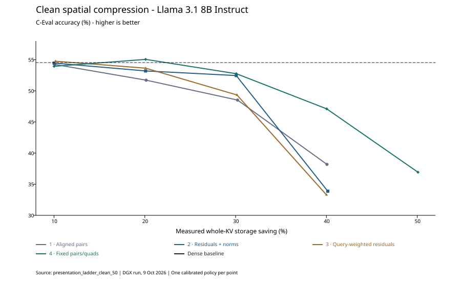
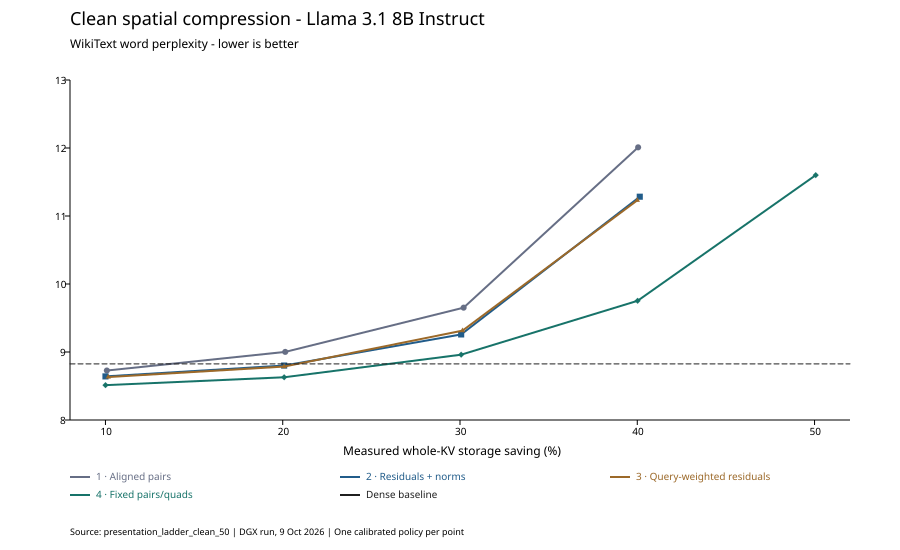

Four calibrated methods · Llama 3.1 8B Instruct · 10–50% storage savings
This is a fresh comparison of four spatial KV-cache compression methods on Llama 3.1 8B Instruct, using bfloat16. Every method has its own layer-specific calibration and allocation, both keys and values are eligible, and all key variants use RoPE alignment. The measured tradeoff is model quality versus estimated compressed cache storage; no CPU, gem5, or custom-ISA speedup was measured.
The strongest useful point is rung 4 at 20% saving: 55.05% C-Eval accuracy versus 54.53% dense, with WikiText perplexity 8.628 versus 8.825. At 30% saving, rung 4 retains 52.75% accuracy and perplexity 8.961. At 40–50%, quality declines substantially. Small improvements over dense are observations from this evaluation, not established accuracy gains.


Rung 1 — aligned pairs baseline. Adjacent tokens are paired independently within each KV head. For selected pairs, store a shared average of their raw, aligned vectors. No residuals or norm restoration. Offline calibration assigns different compression budgets to different layer/key/value slots.
Rung 2 — pairs + sparse residuals + norm restoration. Normalize each aligned vector, form the pair mean, and store selected coordinates of the signed half-difference. Reconstruct the two directions as mean plus/minus that shared residual, then apply one stored restoration coefficient per token. The coefficient is prepared during compression, so the intended compressed consumer needs no norm reduction or square root for restoration.
Rung 3 — query-weighted key residuals. Use the same pair representation as rung 2. Key residual feature scores multiply squared residual deviation by offline query-energy weights, tied across RoPE coordinate planes. Values retain ordinary deviation-based selection. These weights are a proxy for query sensitivity, not an exact attention-output loss. Merge ranking still uses reconstruction error; there is no token-importance weighting.
Rung 4 — calibrated fixed pairs/quads. Add four-token groups as a per-layer/key/value choice. Each slot has one fixed group size and residual count, selected by calibration; the merge locations are still chosen from that prompt. Quads store separate sparse residuals and masks for each token. There is no dynamic eight-format menu, page sorting, shared quad mask, or token-importance mechanism.
For each global saving target, calibration fixes the local budget, residual count, and group size for each of the 64 layer/key/value slots. Unselected slots remain dense. Within a compressed slot, the prompt determines which adjacent groups are merged: groups are ranked by their worst per-token relative squared reconstruction error, and enough of the lowest-error groups are merged to meet the slot budget. Residual coordinates are also selected from the actual vectors.
Merging never crosses head boundaries. Compression is applied to the prefill cache; generated decode tokens are appended dense. Decode can consume the compressed prefill conceptually, but this quality simulation reconstructs tensors for standard attention. It does not execute a compressed-dot-product ISA or measure physical packed-cache allocation.
Query weights are collected from 16 WikiText training chunks. Screen 2,336 single-slot candidates on 4 training chunks, then refine 972 retained candidates on 12 disjoint training chunks. Chunks are 2,048 tokens. The residual menu is 0, 8, 16, or 32 coordinates; the local budget grid is 10%, 25%, 40%, 49%, 60%, and 70%. Candidates above their format storage ceiling are excluded.
Each rung is allocated independently using its own refined perplexity curves and a greedy allocator. Each point targets whole-KV savings of 10%, 20%, 30%, or 40%. Only rung 4 has a 50% point: pair-only formats cannot reach net 50% savings after metadata. The allocation is a heuristic based on single-slot measurements, not a globally optimal joint search.
Validate complete policies on 16 separate WikiText validation chunks. Final tasks are full C-Eval valid, 5-shot, with 1,346 questions, and the full WikiText test task with 62 evaluation documents. A fresh local results ledger includes a new dense baseline. Final WikiText word perplexity and validation token perplexity are different metrics and should not be mixed on one curve.
This is the prefill/full-sequence compression protocol. It is not a causal online compression or long generated-decode benchmark: compression decisions can inspect the full supplied prefill. Results should be presented within that scope.
Whole-KV savings include 16-bit mean and residual values, 16-bit per-token restoration coefficients where applicable, residual feature masks, merge flags, and headers. Unmerged groups and incomplete tails stay dense. Pair residuals use one signed residual vector and mask per pair; quads use per-token residuals and masks. Savings are representation-based estimates recorded by the simulator, not measured resident GPU memory.
All 36 expected task result files are present: 2 dense and 34 compressed-task evaluations. All final tasks have the expected sample counts. Saved task policies match their task configurations, and the summary metrics match the underlying result files. All 34 compressed-task measurements meet their target; C-Eval savings exceed targets by only about 0.005–0.212 percentage points. This confirms comparability of storage budgets, not hardware performance.
Dense: C-Eval 54.53%; WikiText word perplexity 8.825. “pp” means percentage points. Pair-only rungs 1–3: 50% unattainable.
| Rung | Target saving | Measured saving (C-Eval / WikiText) | C-Eval accuracy | Δ vs dense (pp) | WikiText PPL | PPL change vs dense |
|---|---|---|---|---|---|---|
| 1 | 10% | 10.08% / 10.08% | 54.23% | -0.30 | 8.728 | -1.11% |
| 1 | 20% | 20.15% / 20.14% | 51.71% | -2.82 | 9.002 | +2.00% |
| 1 | 30% | 30.21% / 30.20% | 48.51% | -6.02 | 9.652 | +9.37% |
| 1 | 40% | 40.06% / 40.05% | 38.19% | -16.34 | 12.010 | +36.08% |
| 2 | 10% | 10.00% / 10.00% | 54.46% | -0.07 | 8.641 | -2.09% |
| 2 | 20% | 20.08% / 20.08% | 53.19% | -1.34 | 8.801 | -0.28% |
| 2 | 30% | 30.07% / 30.06% | 52.45% | -2.08 | 9.258 | +4.91% |
| 2 | 40% | 40.15% / 40.14% | 33.88% | -20.65 | 11.283 | +27.85% |
| 3 | 10% | 10.16% / 10.16% | 54.75% | +0.22 | 8.631 | -2.20% |
| 3 | 20% | 20.08% / 20.08% | 53.64% | -0.89 | 8.786 | -0.45% |
| 3 | 30% | 30.15% / 30.14% | 49.33% | -5.20 | 9.315 | +5.54% |
| 3 | 40% | 40.01% / 40.00% | 33.28% | -21.25 | 11.231 | +27.25% |
| 4 | 10% | 10.01% / 10.00% | 53.94% | -0.59 | 8.513 | -3.55% |
| 4 | 20% | 20.09% / 20.08% | 55.05% | +0.52 | 8.628 | -2.23% |
| 4 | 30% | 30.08% / 30.06% | 52.75% | -1.78 | 8.961 | +1.53% |
| 4 | 40% | 40.03% / 40.02% | 47.10% | -7.43 | 9.753 | +10.51% |
| 4 | 50% | 50.08% / 50.07% | 36.92% | -17.61 | 11.601 | +31.45% |
Counts are layer/key/value slots, not heads or token blocks. There are 64 possible slots; the remaining slots are dense.
| Rung | Target saving | Pair slots | Quad slots | Dense slots | Residual counts: 0 / 8 / 16 / 32 |
|---|---|---|---|---|---|
| 1 | 10% | 36 | 0 | 28 | 36 / 0 / 0 / 0 |
| 1 | 20% | 53 | 0 | 11 | 53 / 0 / 0 / 0 |
| 1 | 30% | 58 | 0 | 6 | 58 / 0 / 0 / 0 |
| 1 | 40% | 61 | 0 | 3 | 61 / 0 / 0 / 0 |
| 2 | 10% | 37 | 0 | 27 | 18 / 4 / 9 / 6 |
| 2 | 20% | 55 | 0 | 9 | 24 / 4 / 11 / 16 |
| 2 | 30% | 61 | 0 | 3 | 23 / 14 / 7 / 17 |
| 2 | 40% | 64 | 0 | 0 | 41 / 16 / 1 / 6 |
| 3 | 10% | 38 | 0 | 26 | 18 / 6 / 5 / 9 |
| 3 | 20% | 55 | 0 | 9 | 24 / 6 / 10 / 15 |
| 3 | 30% | 60 | 0 | 4 | 25 / 13 / 5 / 17 |
| 3 | 40% | 64 | 0 | 0 | 38 / 18 / 0 / 8 |
| 4 | 10% | 15 | 19 | 30 | 15 / 5 / 8 / 6 |
| 4 | 20% | 21 | 28 | 15 | 21 / 4 / 11 / 13 |
| 4 | 30% | 19 | 38 | 7 | 19 / 7 / 6 / 25 |
| 4 | 40% | 15 | 47 | 2 | 22 / 5 / 8 / 27 |
| 4 | 50% | 5 | 59 | 0 | 25 / 11 / 6 / 22 |
At 30% saving, rung 2 improves C-Eval from 48.51% to 52.45%, a 3.94-point gain over simple pairs, and reduces WikiText perplexity from 9.652 to 9.258. This supports the combined directional/residual/norm method. It does not isolate residuals, normalization, or restoration because those changes enter together.
Query weighting is not a consistent improvement. Compared with rung 2, rung 3 gains 0.30 and 0.45 accuracy points at 10% and 20%, but loses 3.12 points at 30% and 0.59 at 40%. Because allocation is recalibrated for each rung, these are complete-method comparisons, not feature-selection-only ablations.
Allowing quads has the strongest high-saving performance in this run. At 40%, rung 4 reaches 47.10% accuracy versus 38.19%, 33.88%, and 33.28% for rungs 1–3. At 30%, rung 4 also has the best perplexity (8.961), although its 0.30-point accuracy lead over rung 2 is small.
Complexity does not guarantee monotonic gains: at 40%, rung 2 loses 4.31 accuracy points to rung 1, despite having better perplexity. The WikiText calibration objective does not perfectly predict C-Eval behavior. Limited calibration data, heuristic allocation, and joint layer interactions may contribute; this run cannot identify their individual causes.
At 50%, rung 4 achieves measured savings of 50.08% on C-Eval but loses 17.61 accuracy points against dense. WikiText perplexity rises by 31.45%. This is a boundary result, not a quality-preserving operating point.
Lead with the problem: nearby vectors within a head can share a representation, but simple averaging damages quality as storage pressure rises. Explain the compressed representation, then show that sparse residuals and restoration extend useful pair compression, and fixed pair/quad choices improve the higher-saving tradeoff.
Use three main figures or views: C-Eval versus measured saving, WikiText perplexity versus measured saving, and a 30% comparison. State that all rungs use independent per-layer allocation and RoPE alignment. Show attention weighting as a mixed result, not as a necessary ingredient. Use 20–30% as the promising region and 40–50% as the degradation boundary.
Suggested claim: “In this clean Llama 3.1 8B evaluation, calibrated spatial pair/quad compression achieves about 20% whole-KV storage savings with near-dense task quality, and about 30% savings with a 1.78-point C-Eval drop. Sparse residuals improve pair-only quality at 30% savings.” Avoid a universal quality guarantee or a speedup claim.
Freeze this run as the main clean comparison. For a norm-restoration ablation, keep representation and policy choices controlled and report the changed byte cost as well as quality. For a RoPE-alignment ablation, explicitly label it as a separate variant: all four main rungs currently use alignment.
To distinguish mechanism effects from allocation effects, evaluate both a fixed-policy ablation and, if warranted, a separately recalibrated variant at the same measured savings. Investigate the pair-method 40% collapse before making broad claims about residuals. Leave token importance, dynamic format selection, new decode compression, and hardware timing for subsequent research.
Source: compression_topics/spatial/figures/presentation_ladder_clean_50, pulled in commit d8791df on 9 October 2026. Definitions are in presentation_spatial.py and presentation_ladder_study.py. This report is derived from saved results; no model evaluations were rerun.
One model, one calibration seed, and one set of calibrated policies were tested. The report includes no repeat-seed confidence intervals or paired question-level significance test. C-Eval and WikiText cover different quality dimensions; small gains should not be overinterpreted. The calibration objective is perplexity, so calibration quality does not guarantee downstream accuracy.